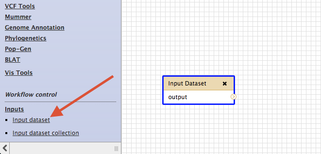

Click the button called Create New Workflow

Enter a name and description for the new workflow and click Create
You should now have a blank workflow canvas. Create an input box for the workflow by scrolling to the bottom left of the galaxy tool menu. Under Workflow Control and then under Inputs you should see an Input dataset item. Click it to create a blank input box

Now add workflow nodes for other tools by clicking on the relevant tool in the galaxy tool menu (left pane of galaxy). The tools to add are;
- The Select tool from the Find and Sort submenu
- The Line/Word/Character count tool from the Text Manipulation submenu
After adding these tools you can join them up by dragging from the outputs of one node to the inputs of the next

Save your workflow
After saving the workflow return to the main Workflow menu (top of Galaxy) and select your new workflow to run it. Before running the workflow you will be presented with a window that allows you to alter the workflow inputs.